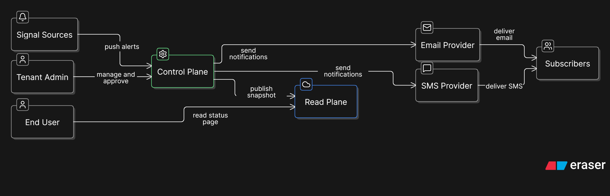
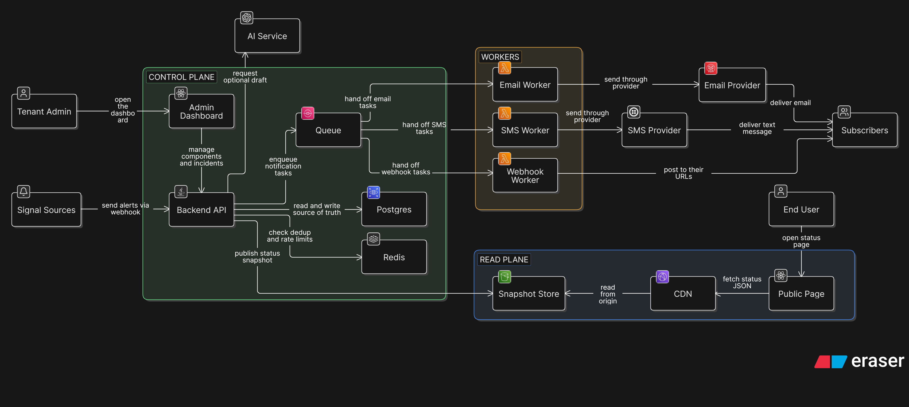
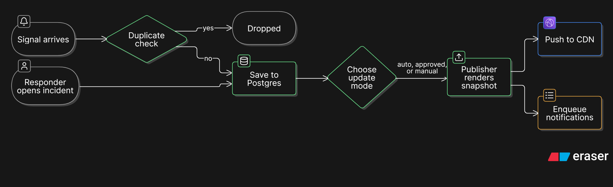
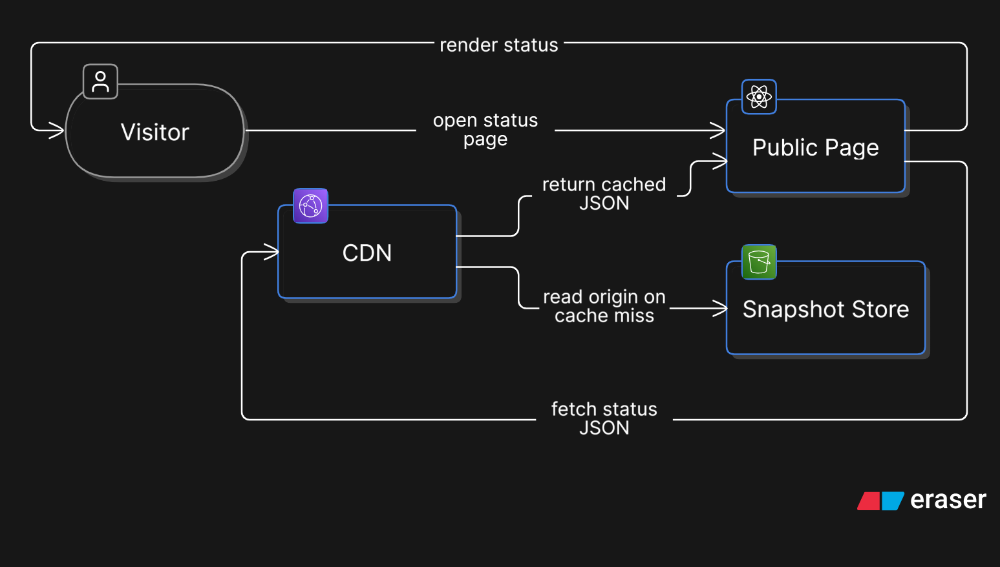
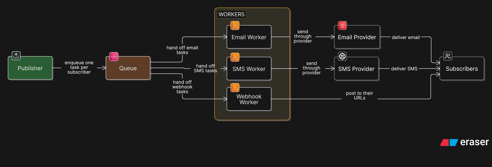
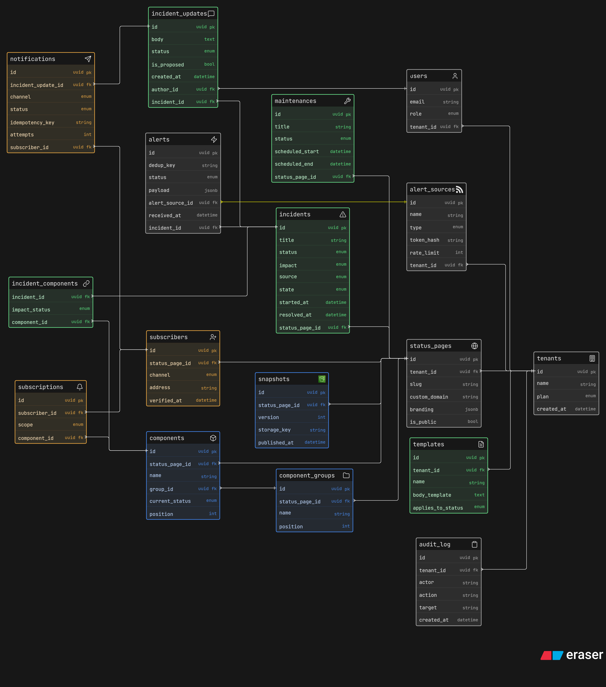
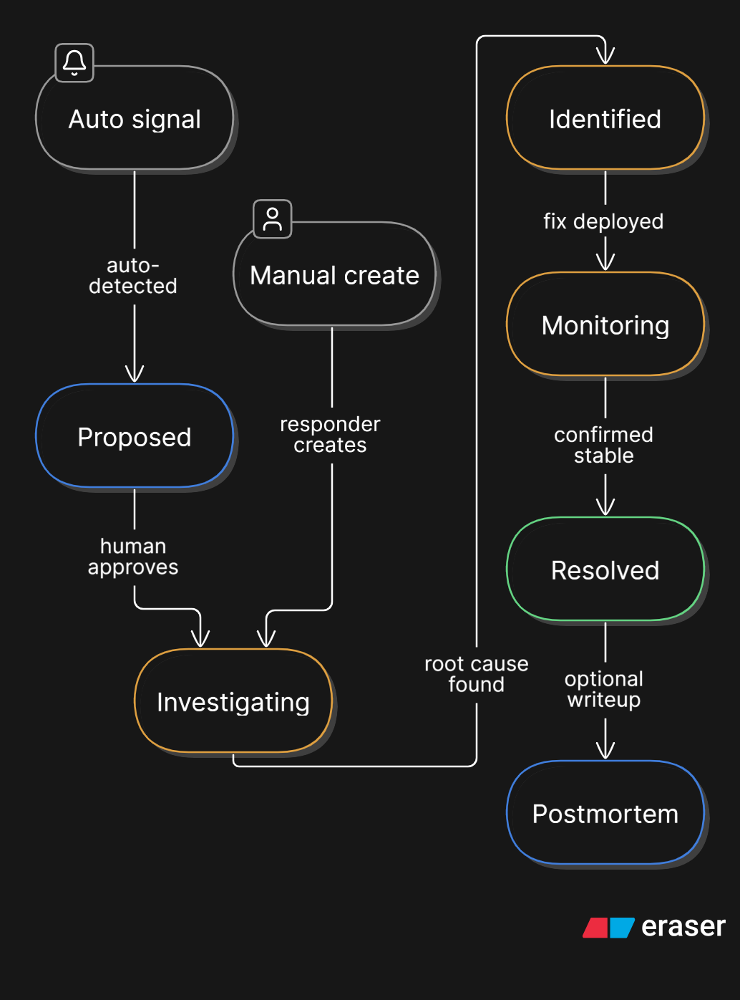
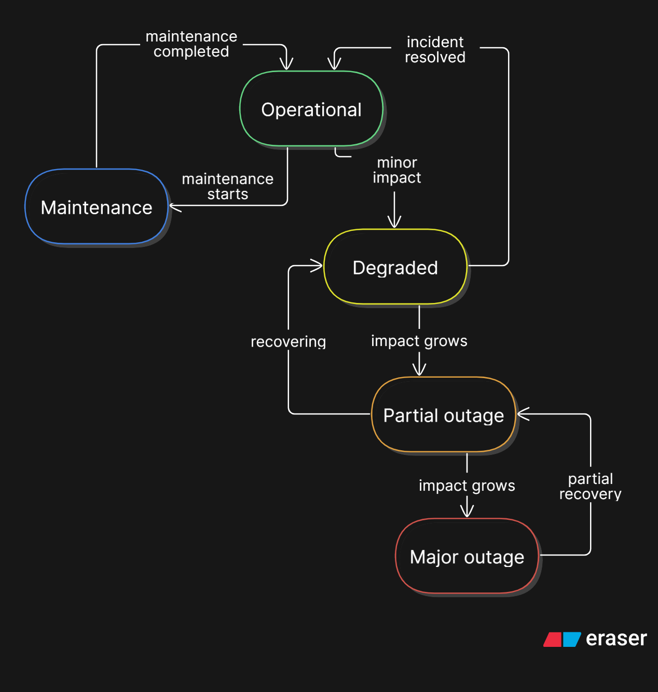
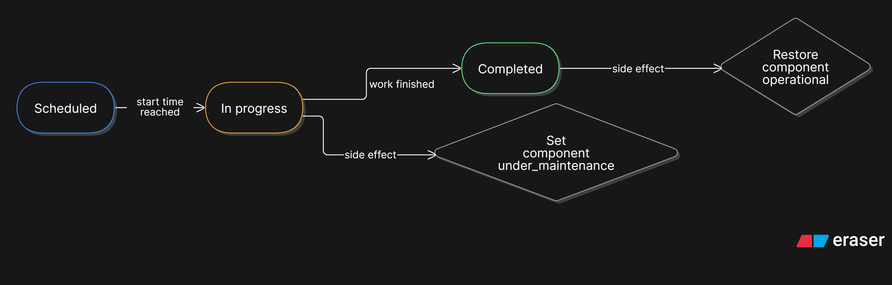
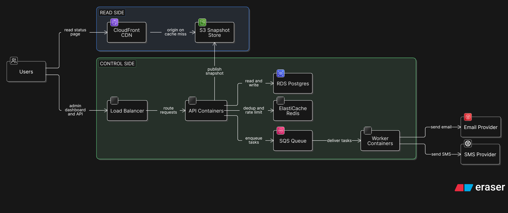

System Design Document · Take-home
A multi-tenant status-page service in the spirit of incident.io, Atlassian Statuspage, and Rootly. This document covers the high-level design end to end: requirements, architecture, data model, APIs, deployment, and the trade-offs behind each choice.
What we're building and the one idea that shapes everything.
A status page is the public board a company shows its customers during an outage or maintenance: which parts of the product are healthy, what's currently broken, and what the team is doing about it. We're building this as a multi-tenant SaaS, where many customer organisations (tenants) each get their own branded page on their own domain, like status.acme.com.
The product sits downstream of monitoring. Signals already exist in the customer's world (Datadog, PagerDuty, Prometheus, and so on). We don't generate them. We consume them, and add a human-friendly communication layer on top.
Reads and writes are wildly asymmetric. The public page is read by potentially millions of people during an outage, and every reader sees the same page. It is written only a handful of times per incident. So we split the system into a read plane (a pre-computed page served from a CDN, cheap and outage-proof) and a control plane (where the rare, careful writes happen). Almost every decision in this document traces back to that split.
Functional, non-functional, and the numbers that justify the architecture.
investigating → identified → monitoring → resolved), carrying threaded updates, each affecting one or more components.proposed and wait for human approval. Responders can also create and resolve incidents manually.scheduled → in_progress → completed).Doing the same operation twice has the same effect as doing it once. If a notification job runs again after a crash, the subscriber still gets exactly one message.
| Dimension | Estimate | Consequence |
|---|---|---|
| Tenants | ~10K, each with ~10 to 50 components | Tenancy is first-class on every table. |
| Subscribers | avg ~1K/tenant; large tenants 100K to 1M+ | Fan-out is the real write-side cost. |
| Reads | near-zero baseline, then 50K to 100K+ RPS spikes on one page | Static JSON at a CDN; DB never touched on reads. |
| Writes | a handful per minute, globally | Trivial to serve; the cost is the fan-out it triggers. |
Reads are massive, identical, cacheable, and must outlive the system itself; writes are rare but trigger expensive, must-not-fail fan-out. Two planes, connected by a single publish step.
Who talks to the system, and what crosses its boundary.
Three kinds of actor interact with the platform. Signal sources push alerts in. Tenant admins / responders manage incidents and approve proposed updates. End users read the public page, and a subset become subscribers who receive notifications. Outbound, the system talks to third-party delivery providers (email, SMS) and a CDN edge.

It fixes the boundary before we open the box. Everything inside is ours to design; everything outside is a contract we either consume (signals) or fulfil (the public page, notifications).
The two planes, every component's job, and the paths data takes through them.
The system divides cleanly into a read plane and a control plane, joined by a one-way publish step. The control plane holds the truth and does the writing; the read plane holds a pre-computed, edge-served copy that the public sees.
The newsroom (control plane) prints an edition once. Trucks carry identical copies to newsstands worldwide (the CDN). Readers buy from the nearest newsstand and never call the newsroom. If the newsroom burns down overnight, every copy already on a newsstand is still readable. That last property is how the page survives our own outage.

Each box does one job. Plane tags: read control async
Caches and serves the published page from edge locations near readers. Absorbs the thundering herd; the origin is only hit on a cache miss.
Holds the pre-computed status JSON, the "printed editions." It is the CDN's origin: cheap, durable, and independent of the database.
The visitor-facing UI. Static files that fetch the status JSON through the CDN. Never talks to the control plane live.
The brain. Ingests signals, owns incident logic, runs the approval workflow, writes to the database, triggers publishing, and enqueues notifications.
Where responders create, update, and resolve incidents and approve proposed updates. Talks to the Backend API.
The source of truth: tenants, components, incidents, updates, subscribers, templates, audit log.
Fast-path memory: deduplication keys for incoming signals, rate-limit counters, and short-lived caching.
Renders the current state into a status JSON snapshot, writes it to the snapshot store, and invalidates the CDN. The single gate where state becomes public.
The queue holds fan-out tasks; workers deliver them per channel (email, SMS, webhook) with retries and idempotency, outside the web request.
Drafts customer-facing update wording and post-incident summaries. Always human-approved; never in the critical path.
proposed; a manual one is authored directly.

We mirror how incident.io and Rootly take signals in: HTTP endpoints, never database access. Each tenant configures one or more alert sources; each source gets a unique webhook URL and an auth token. Native integrations cover common tools; a generic HTTP source covers anything else that can send a webhook.
A waiter takes your order; you don't walk into the kitchen. Endpoints give security (no peeking at other tenants' data), freedom (we can change our schema without breaking customers), and a small blast radius (one bad caller can't take down shared infra). DB access would surrender all three.
The internal incident is the source of truth; the public status page is a cleaned-up projection of it: the same truth, made safe for customers. An update reaches the page in one of three modes, all funnelling through the same publish gate:
proposed state made concrete.All three modes pass through a single publish step. That gives us exactly one place to enforce safety checks, write the audit trail, and fire notifications, instead of three slightly-different code paths that drift apart over time.
One published update may need to reach up to a million subscribers across channels. That can't happen inside a web request, so the publish step drops tasks into a queue, and background workers deliver them, retrying failures and keying on an idempotency token so nobody gets a duplicate.
You drop one announcement at the counter (publish). Behind the scenes, carriers (workers) copy and deliver it to every address (subscribers), some by email route and some by SMS. A failed delivery is retried by that carrier and never holds up the counter.

A full queue + worker fleet is the most complex part to operate. So we design the seam (a NotificationDispatcher abstraction) from day one but start with the simplest implementation. The real queue is the first scale-up lever, and swapping it in requires no rewrite of incident logic.
AI shows up in two non-critical spots, both opt-in and both human-approved:
AI never decides what goes public on its own and never sits in the read path. It's an assistant on the side of the workflow, not a component the system depends on.
The chosen stack, with a short reason for each. Two lines, not a debate.
| Layer | Choice | Why |
|---|---|---|
| Backend API | Java + Spring Boot | Strongly OOP and modular, which keeps the domain logic clean and testable as it grows. |
| Frontend | React / Next.js | The public page renders to static files (edge-served); the admin dashboard is a React app talking to the API. |
| Database | PostgreSQL | The data is relational (tenants, components, incidents, subscribers), so a relational database is the natural fit. |
| Fast-path store | Redis | In-memory speed with auto-expiry for dedup keys, rate limiting, and short-lived caches. |
| Queue | SQS (or similar) | Decouples the rare write from the expensive fan-out; durable and simple to operate. |
| Snapshot store | S3 | Cheap, durable object storage for published page snapshots; doubles as the CDN origin. |
| CDN | CloudFront | Edge caching for the read path; also terminates TLS for tenant custom domains. |
| Email / SMS | Third-party providers | Deliverability is a hard problem best bought, not built. Wrapped behind a provider interface so channels are swappable. |
| Runtime | Docker containers | Portable; runs on a simple platform early and on managed orchestration at scale. |
TLS is what turns http into https, the padlock. It seals data in transit so only the right site can read it, and proves the visitor is on the real page. Each tenant's custom domain needs its own certificate, issued automatically.
We use AWS because it has the most mature, widely-used managed services and most teams already know it. The design isn't tied to it. Every piece maps to a GCP equivalent (Cloud Storage and Cloud CDN, Cloud SQL, Pub/Sub, Cloud Run or GKE), and since email runs on a third-party provider, that part is cloud-agnostic. So we could switch if needed.
The system is built to be deployed and observed with infrastructure-as-code and metrics dashboards (e.g. Terraform, Prometheus + Grafana) as it grows. These are deliberately left as clear extension points rather than day-one work.
The core entities and how they relate. Every table is tenant-scoped.
The schema centres on the incident (the source of truth) and the component (what has a health state). Updates thread off incidents; a join table records which components an incident affects. Subscribers and notifications live on the communication side. Everything carries a tenant_id so tenants stay isolated.

| Table | Key columns | Purpose |
|---|---|---|
tenants | id, name, plan, created_at | The customer organisation. Root of all isolation. |
users | id, tenant_id, email, role | Responders / admins who manage the page. |
status_pages | id, tenant_id, slug, custom_domain, branding, is_public | A tenant's page (a tenant may have more than one). |
component_groups | id, status_page_id, name, position | Visual grouping of components. |
components | id, status_page_id, group_id, name, current_status, position | A service whose health is shown. |
incidents | id, status_page_id, title, status, impact, source, state, started_at, resolved_at | The incident record. state = proposed / published; source = manual / auto. |
incident_updates | id, incident_id, body, status, author_id, is_proposed, created_at | Threaded updates posted during an incident. |
incident_components | incident_id, component_id, impact_status | Join: which components an incident hits, and how hard. |
maintenances | id, status_page_id, title, status, scheduled_start, scheduled_end | Planned maintenance windows. |
| Table | Key columns | Purpose |
|---|---|---|
subscribers | id, status_page_id, channel, address, verified_at | Someone who opted in to updates. |
subscriptions | id, subscriber_id, scope, component_id | Whole-page or per-component subscription. |
alert_sources | id, tenant_id, name, type, token_hash, rate_limit | A configured signal source with its webhook token. |
alerts | id, alert_source_id, dedup_key, status, payload, received_at, incident_id | Raw signals received; linked to an incident if they spawn one. |
templates | id, tenant_id, name, body_template, applies_to_status | Pre-approved message templates for the approval mode. |
notifications | id, incident_update_id, subscriber_id, channel, status, idempotency_key, attempts | One delivery attempt per subscriber per update. The idempotency key prevents duplicates. |
snapshots | id, status_page_id, version, storage_key, published_at | Published page versions written to the snapshot store. |
audit_log | id, tenant_id, actor, action, target, created_at | Who did what; every publish and approval recorded. |
We start with a shared schema and a tenant_id column on every table, which is simplest to operate. If isolation needs grow, the same model extends to row-level security or schema-per-tenant without redesigning the entities.
The lifecycles that govern incidents, component health, and maintenance.
An incident moves investigating → identified → monitoring → resolved, with an optional postmortem afterwards. Auto-detected incidents enter through a proposed gate before becoming public.

A component sits in one of: operational degraded partial outage major outage maintenance. Health is set by an active incident affecting it, by maintenance, or manually.

Maintenance runs scheduled → in_progress → completed, flipping affected components into the maintenance state for the window.

Four groups of endpoints, split by who calls them.
Served via the CDN as cached JSON. No auth; safe to hammer.
| Method | Path | Returns |
|---|---|---|
GET | /v1/pages/{slug}/status | Current components, states, active incidents. |
GET | /v1/pages/{slug}/incidents | Past-incident history. |
GET | /v1/pages/{slug}/feed.rss | RSS feed of updates. |
Authenticated, tenant-scoped. Drives the dashboard.
| Method | Path | Action |
|---|---|---|
POST | /v1/incidents | Create an incident. |
POST | /v1/incidents/{id}/updates | Post an update (manual / template / approve). |
PATCH | /v1/components/{id} | Set component health. |
POST | /v1/maintenances | Schedule maintenance. |
POST | /v1/incidents/{id}/approve | Approve a proposed update. |
| Method | Path | Action |
|---|---|---|
POST | /v1/pages/{slug}/subscribers | Subscribe (email / SMS / webhook). |
DELETE | /v1/subscribers/{token} | Unsubscribe. |
| Method | Path | Action |
|---|---|---|
POST | /v1/ingest/{source_id}?token=… | Receive an alert event (with dedup key) from a signal source. |
How it runs, how we watch it, and what it costs.
The read plane is just object storage behind a CDN, with nothing to "run." The control plane is a containerised backend plus its database, cache, and queue. Early on this fits a simple managed platform; at scale it moves to managed container orchestration. The notification workers scale independently of the API, since fan-out load is bursty and separate from request load.

This design is cost-effective by shape. Reads, which are the overwhelming majority of traffic, are static files on a CDN, costing pennies even during a 100K-RPS spike, and never touch the database. Writes are rare, so the database and API stay small. Workers and the queue cost almost nothing at this write volume, and using third-party email means no mail infrastructure to run. (Detailed dollar modelling is future work.)
What we chose to defer, and why that's safe.
| Item | Status | Note |
|---|---|---|
| Surviving our own outage (active failover) | deferred | The read/write split already makes the page outage-tolerant; full multi-region failover machinery comes later. |
| Real message queue + worker fleet | extension point | Seam designed in now; the real queue is the first scale-up lever. |
| Migrating off other vendors | out of scope | Clean extension point, not designed here. |
| Deeper AI automation | future | Drafting and postmortems first; broader automation stays human-approved. |
| Infra-as-code & metrics dashboards | extension point | Design accommodates Terraform / Prometheus-style tooling as the system grows. |
Massive cacheable reads on one side, rare expensive writes on the other, a single publish gate between them. Keep that split intact and the rest of the system stays simple, cheap, and resilient.